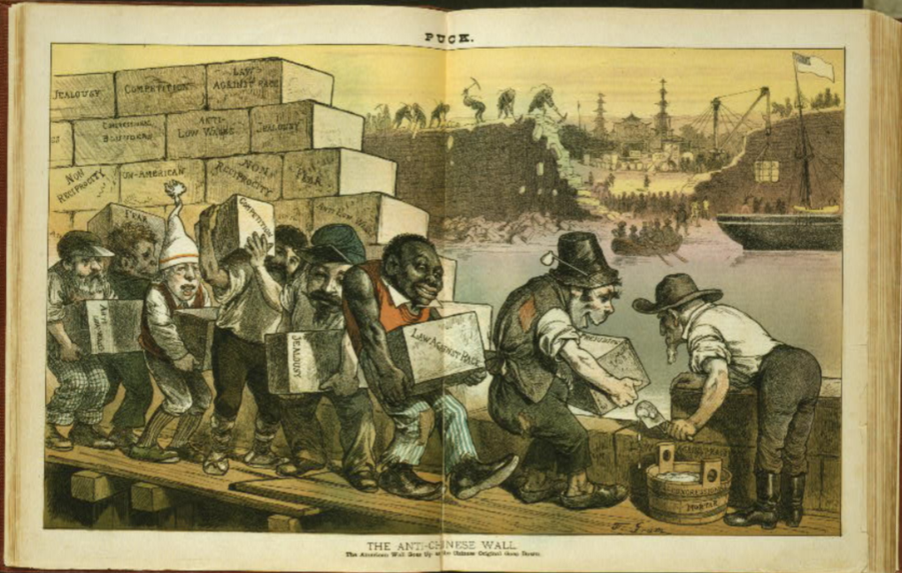
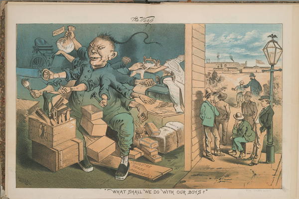
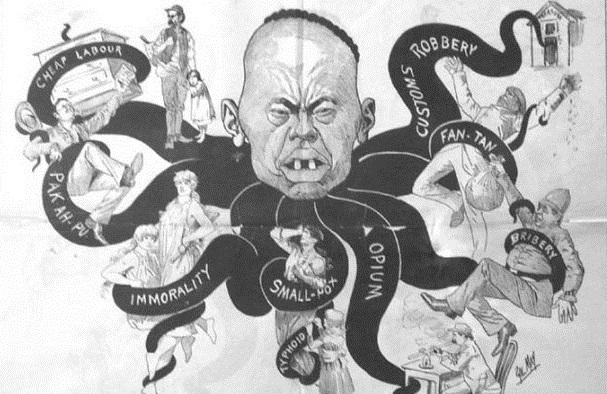
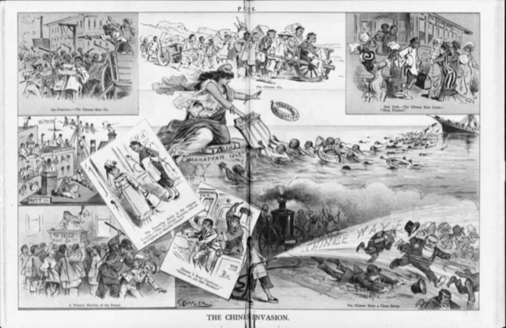

Media Portrayal of Chinese
The portrayal of Chinese immigrants in media during the late 1800s played a significant role in anti-Chinese sentiments and fueled support for immigration restrictions. Newspapers, magazines, and other forms of media depicted them as threats and aliens who were unwelcome in the States. They were often depicted stereotypically with exaggerated physical features to make them seem more foreign and inferior: small, narrow eyes, yellow skin, and a pigtail hairstyle. American media used these depictions to mark them as too different to assimilate, reinforcing their image as a threat to American society and culture. These depictions also blamed the Chinese for taking away jobs from white Americans and creating economic hardships. This led to the popularization of the term "Yellow Peril," symbolizing people of Asian descent as a threat to America and the Western world. This fear of the Chinese overrunning the country and ruining the United States convinced many Americans to support the Chinese Exclusion Act.

"The presence of a race permanently separated from us by color, dress, customs, and habits of thought, is a thing to be deplored... there is every reason to expect such an influx from the overcrowded provinces of China... Prevention is better than cure."
-The Commoner, 1901

